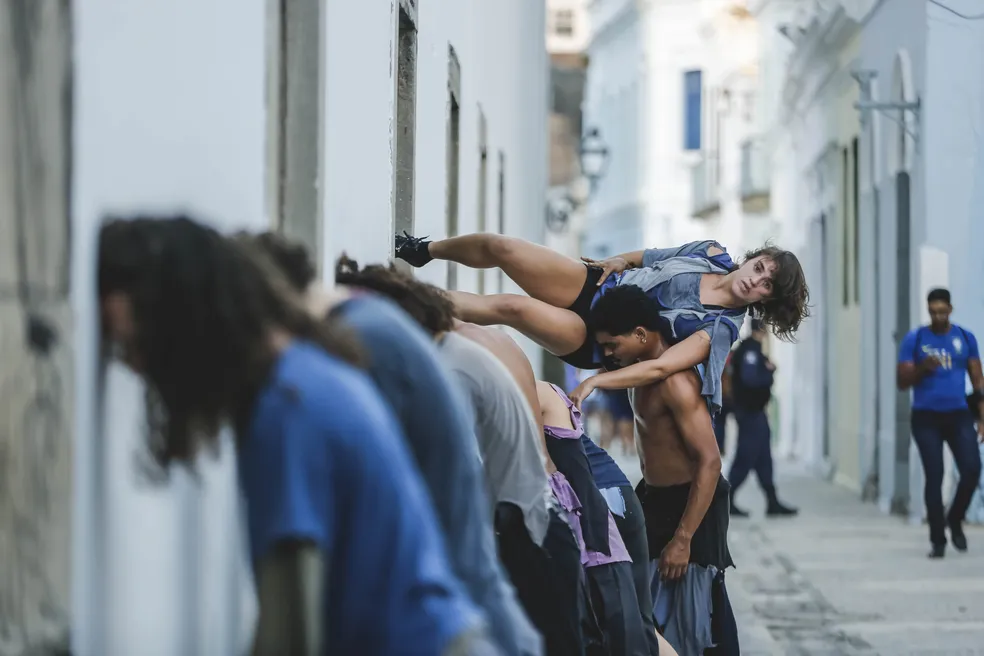

Além dos teatros do Parque, Santa Isabel e Hermilo Borba Filho, o festival leva música e dança à Avenida Rio Branco, ao Pátio de São Pedro, à Praça do Diário, à Rua do Bom Jesus, ao Mercado de São José e ao Parque Dona Lindu.
A programação procura celebrar desde o estilo popular ao contemporâneo, da dança de rua à performance, passando pela produção audiovisual e fotografia. São 23 espetáculos,12 apresentações de videodança, uma exposição/instalação, três shows musicais, três oficinas e três debates
Como parte da programação, entre os dias 8 e 10, o Festival cumpre uma etapa formativa, convidando os jovens do Compaz Miguel Arraes e do Compaz Escritor Ariano Suassuna a aprender noções básicas de dança popular e dança contemporânea. Nas mesmas datas, há oficina de dança para crianças no Teatro Hermilo Borba Filho, alcançando principalmente as crianças da Comunidade do Pilar.
Os ingressos para todos os espetáculos são distribuídos gratuitamente, na bilheteria dos teatros, uma hora antes do início de cada apresentação. No caso do espetáculo "Pontilhados", a produção informa que o público deve dispor de celular com acesso a internet e fone de ouvido para acompanhar o áudio.
Além do palco, o Festival ocupará também as paredes do Teatro Hermilo Borba Filho, com a exposição/instalação "Centelha", da artista Bruna Mascaro, que pode ser visitada de terça a domingo, das 14h às 20h, do dia 8 ao dia 30 de novembro.
Esta edição do evento homenageia as dançarinas Adriana Frevo, Betânia Salustiano, Conceição dos Prazeres, Dadinha Gomes, Gaby Conde, Iaci Silva, Leila Nascimento, Lucélia Albuquerque, Lucicleide Maria, Marize Félix, Vilma Carijós, além da passista e Patrimônio Vivo do Recife Zenaide Bezerra.